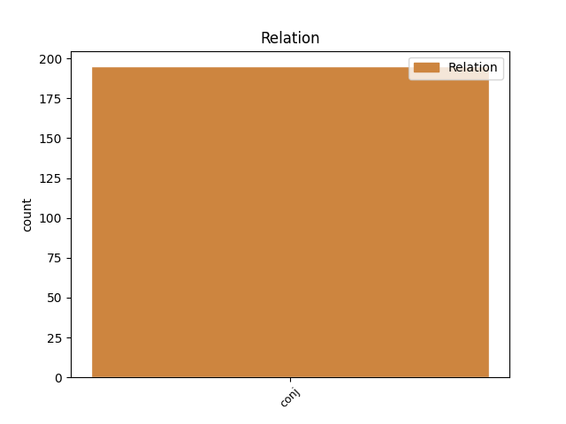
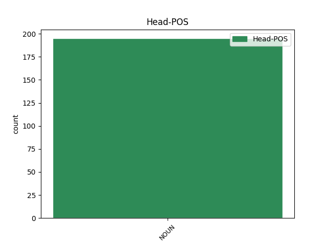
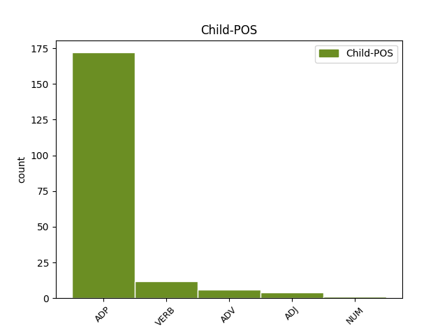

Distribution of features within this leaf



Agreement Rules sorted by frequency.
- When the dependent token is the conjunct(conj) of the head token, and the head token is NOUN and the dependent token is ADP.
1 इस _ _ _ _ 0 _ _ _
2 मामले _ _ _ _ 0 _ _ _
3 में _ _ _ _ 0 _ _ _
4 प्रतिस्पर्धा _ _ _ _ 0 _ _ _
5 , _ _ _ _ 0 _ _ _
6 मूल्यांकन मूल्यांकन NOUN NN Case=Acc|Gender=Masc|Number=Sing|Person=3 0 _ _ _
7 और _ _ _ _ 0 _ _ _
8 आरक्षित _ _ _ _ 0 _ _ _
9 मूल्य _ _ _ _ 0 _ _ _
10 निर्धारण _ _ _ _ 0 _ _ _
11 जैसे जैसा ADP PSP AdpType=Post|Case=Acc|Gender=Masc|Number=Plur 6 conj _ ChunkId=NP4|ChunkType=child|Translit=jaise
12 मुद्दों _ _ _ _ 0 _ _ _
13 का _ _ _ _ 0 _ _ _
14 लाभ _ _ _ _ 0 _ _ _
15 नहीं _ _ _ _ 0 _ _ _
16 उठाया _ _ _ _ 0 _ _ _
17 गया _ _ _ _ 0 _ _ _
18 , _ _ _ _ 0 _ _ _
19 जैसा _ _ _ _ 0 _ _ _
20 कि _ _ _ _ 0 _ _ _
21 विनिवेश _ _ _ _ 0 _ _ _
22 मंत्रालय _ _ _ _ 0 _ _ _
23 ने _ _ _ _ 0 _ _ _
24 अन्य _ _ _ _ 0 _ _ _
25 मामलों _ _ _ _ 0 _ _ _
26 में _ _ _ _ 0 _ _ _
27 किया _ _ _ _ 0 _ _ _
28 था _ _ _ _ 0 _ _ _
29 । _ _ _ _ 0 _ _ _
1 शिरोमणि _ _ _ _ 0 _ _ _
2 अकाली _ _ _ _ 0 _ _ _
3 दल _ _ _ _ 0 _ _ _
4 ( _ _ _ _ 0 _ _ _
5 दिल्ली _ _ _ _ 0 _ _ _
6 ) _ _ _ _ 0 _ _ _
7 के _ _ _ _ 0 _ _ _
8 अध्यक्ष _ _ _ _ 0 _ _ _
9 परमजीत _ _ _ _ 0 _ _ _
10 सिंह _ _ _ _ 0 _ _ _
11 सरना _ _ _ _ 0 _ _ _
12 ने _ _ _ _ 0 _ _ _
13 यहां _ _ _ _ 0 _ _ _
14 पत्रकारों _ _ _ _ 0 _ _ _
15 से _ _ _ _ 0 _ _ _
16 कहा _ _ _ _ 0 _ _ _
17 कि _ _ _ _ 0 _ _ _
18 पाकिस्तान _ _ _ _ 0 _ _ _
19 की _ _ _ _ 0 _ _ _
20 पंजाब _ _ _ _ 0 _ _ _
21 प्रांत _ _ _ _ 0 _ _ _
22 की _ _ _ _ 0 _ _ _
23 सरकार _ _ _ _ 0 _ _ _
24 और _ _ _ _ 0 _ _ _
25 वक्फ _ _ _ _ 0 _ _ _
26 बोर्ड _ _ _ _ 0 _ _ _
27 ने _ _ _ _ 0 _ _ _
28 हमें _ _ _ _ 0 _ _ _
29 लाहौर _ _ _ _ 0 _ _ _
30 स्थित _ _ _ _ 0 _ _ _
31 चूना _ _ _ _ 0 _ _ _
32 मंडी _ _ _ _ 0 _ _ _
33 में _ _ _ _ 0 _ _ _
34 गुरुद्वारा _ _ _ _ 0 _ _ _
35 रामदास _ _ _ _ 0 _ _ _
36 की _ _ _ _ 0 _ _ _
37 मरम्मत मरम्मत NOUN NN Case=Acc|Gender=Fem|Number=Sing|Person=3 0 _ _ _
38 और _ _ _ _ 0 _ _ _
39 इसके _ _ _ _ 0 _ _ _
40 साथ _ _ _ _ 0 _ _ _
41 ही _ _ _ _ 0 _ _ _
42 गुरुद्वारा _ _ _ _ 0 _ _ _
43 ननकाना _ _ _ _ 0 _ _ _
44 साहिब _ _ _ _ 0 _ _ _
45 से _ _ _ _ 0 _ _ _
46 जुड़े _ _ _ _ 0 _ _ _
47 कॉलेज _ _ _ _ 0 _ _ _
48 में _ _ _ _ 0 _ _ _
49 तीर्थ _ _ _ _ 0 _ _ _
50 यात्रियों _ _ _ _ 0 _ _ _
51 के _ _ _ _ 0 _ _ _
52 लिए _ _ _ _ 0 _ _ _
53 यात्री _ _ _ _ 0 _ _ _
54 निवास _ _ _ _ 0 _ _ _
55 बनाने बना VERB VM Case=Acc|Number=Sing|VerbForm=Inf 37 conj _ ChunkId=VGNN|ChunkType=head|Tam=nA|Translit=banāne|Vib=ना_का
56 की _ _ _ _ 0 _ _ _
57 अनुमति _ _ _ _ 0 _ _ _
58 दे _ _ _ _ 0 _ _ _
59 दी _ _ _ _ 0 _ _ _
60 है _ _ _ _ 0 _ _ _
61 । _ _ _ _ 0 _ _ _
1 इस _ _ _ _ 0 _ _ _
2 प्रकार _ _ _ _ 0 _ _ _
3 पीएसयू _ _ _ _ 0 _ _ _
4 कंपनियों _ _ _ _ 0 _ _ _
5 में _ _ _ _ 0 _ _ _
6 सरकार _ _ _ _ 0 _ _ _
7 की _ _ _ _ 0 _ _ _
8 विनिवेश _ _ _ _ 0 _ _ _
9 नीति _ _ _ _ 0 _ _ _
10 को _ _ _ _ 0 _ _ _
11 सरकार सरकार NOUN NN Case=Acc|Gender=Fem|Number=Sing|Person=3 0 _ _ _
12 के _ _ _ _ 0 _ _ _
13 अंदर _ _ _ _ 0 _ _ _
14 व _ _ _ _ 0 _ _ _
15 बाहर बाहर ADV NST AdpType=Post|Case=Acc|Gender=Masc|Number=Sing|Person=3 11 conj _ AltTag=ADV-NOUN|ChunkId=NP6|ChunkType=head|Translit=bāhara|Vib=0_से
16 से _ _ _ _ 0 _ _ _
17 मिले _ _ _ _ 0 _ _ _
18 विरोध _ _ _ _ 0 _ _ _
19 के _ _ _ _ 0 _ _ _
20 मद्देनजर _ _ _ _ 0 _ _ _
21 इसकी _ _ _ _ 0 _ _ _
22 सफलता _ _ _ _ 0 _ _ _
23 की _ _ _ _ 0 _ _ _
24 बहुत _ _ _ _ 0 _ _ _
25 कम _ _ _ _ 0 _ _ _
26 ही _ _ _ _ 0 _ _ _
27 संभावना _ _ _ _ 0 _ _ _
28 है _ _ _ _ 0 _ _ _
29 । _ _ _ _ 0 _ _ _
1 600 _ _ _ _ 0 _ _ _
2 प्रजातियों प्रजाति NOUN NN Case=Acc|Gender=Fem|Number=Plur|Person=3 0 _ _ _
3 व _ _ _ _ 0 _ _ _
4 8000 8000 NUM QC Case=Acc|NumType=Card 2 conj _ ChunkId=NP2|ChunkType=head|Translit=8000|Vib=0_से
5 से _ _ _ _ 0 _ _ _
6 ज्यादा _ _ _ _ 0 _ _ _
7 पक्षियों _ _ _ _ 0 _ _ _
8 के _ _ _ _ 0 _ _ _
9 संग्रह _ _ _ _ 0 _ _ _
10 के _ _ _ _ 0 _ _ _
11 साथ _ _ _ _ 0 _ _ _
12 जुरोंग _ _ _ _ 0 _ _ _
13 बर्ड _ _ _ _ 0 _ _ _
14 पार्क _ _ _ _ 0 _ _ _
15 एशिया _ _ _ _ 0 _ _ _
16 - _ _ _ _ 0 _ _ _
17 प्रशांत _ _ _ _ 0 _ _ _
18 क्षेत्र _ _ _ _ 0 _ _ _
19 का _ _ _ _ 0 _ _ _
20 सबसे _ _ _ _ 0 _ _ _
21 बड़ा _ _ _ _ 0 _ _ _
22 पक्षी _ _ _ _ 0 _ _ _
23 पार्क _ _ _ _ 0 _ _ _
24 है _ _ _ _ 0 _ _ _
25 । _ _ _ _ 0 _ _ _
1 इन _ _ _ _ 0 _ _ _
2 विषयों _ _ _ _ 0 _ _ _
3 में _ _ _ _ 0 _ _ _
4 भारत _ _ _ _ 0 _ _ _
5 के _ _ _ _ 0 _ _ _
6 बदलते _ _ _ _ 0 _ _ _
7 जनसांख्यिकी _ _ _ _ 0 _ _ _
8 प्रोफाइल प्रोफाइल NOUN NN Case=Nom|Gender=Masc|Number=Plur|Person=3 0 _ _ _
9 , _ _ _ _ 0 _ _ _
10 स्वदेशी स्वदेशी ADJ JJ Case=Nom 8 conj _ ChunkId=JJP|ChunkType=head|SpaceAfter=No|Translit=svadeśī
11 , _ _ _ _ 0 _ _ _
12 सामाजिक _ _ _ _ 0 _ _ _
13 न्याय _ _ _ _ 0 _ _ _
14 और _ _ _ _ 0 _ _ _
15 गुरूजी _ _ _ _ 0 _ _ _
16 का _ _ _ _ 0 _ _ _
17 दर्शन _ _ _ _ 0 _ _ _
18 शामिल _ _ _ _ 0 _ _ _
19 हैं _ _ _ _ 0 _ _ _
20 । _ _ _ _ 0 _ _ _
Disagree Examples:
1 मुख्य _ _ _ _ 0 _ _ _
2 रूप _ _ _ _ 0 _ _ _
3 से _ _ _ _ 0 _ _ _
4 यह _ _ _ _ 0 _ _ _
5 प्रदर्शन _ _ _ _ 0 _ _ _
6 कला कला NOUN NN Case=Acc|Gender=Fem|Number=Sing|Person=3 0 _ _ _
7 और _ _ _ _ 0 _ _ _
8 दृश्य _ _ _ _ 0 _ _ _
9 कला _ _ _ _ 0 _ _ _
10 का का ADP PSP AdpType=Post|Case=Nom|Gender=Masc|Number=Sing 6 conj _ ChunkId=NP4|ChunkType=child|Translit=kā
11 केंद्र _ _ _ _ 0 _ _ _
12 है _ _ _ _ 0 _ _ _
13 । _ _ _ _ 0 _ _ _
1 यहाँ _ _ _ _ 0 _ _ _
2 आदिवासी _ _ _ _ 0 _ _ _
3 , _ _ _ _ 0 _ _ _
4 समुद्र _ _ _ _ 0 _ _ _
5 किनारे _ _ _ _ 0 _ _ _
6 , _ _ _ _ 0 _ _ _
7 रेगिस्तान रेगिस्तान NOUN NN Case=Acc|Gender=Masc|Number=Sing|Person=3 0 _ _ _
8 और _ _ _ _ 0 _ _ _
9 हिमालय _ _ _ _ 0 _ _ _
10 के _ _ _ _ 0 _ _ _
11 आवासों _ _ _ _ 0 _ _ _
12 के का ADP PSP AdpType=Post|Case=Nom|Gender=Masc|Number=Plur 7 conj _ ChunkId=NP6|ChunkType=child|Translit=ke
13 नमूने _ _ _ _ 0 _ _ _
14 भी _ _ _ _ 0 _ _ _
15 बनाए _ _ _ _ 0 _ _ _
16 गए _ _ _ _ 0 _ _ _
17 हैं _ _ _ _ 0 _ _ _
18 । _ _ _ _ 0 _ _ _
1 किले _ _ _ _ 0 _ _ _
2 के _ _ _ _ 0 _ _ _
3 अंदर _ _ _ _ 0 _ _ _
4 महल _ _ _ _ 0 _ _ _
5 , _ _ _ _ 0 _ _ _
6 छतरियाँ _ _ _ _ 0 _ _ _
7 , _ _ _ _ 0 _ _ _
8 फौजी _ _ _ _ 0 _ _ _
9 छावनी _ _ _ _ 0 _ _ _
10 , _ _ _ _ 0 _ _ _
11 हिन्दू _ _ _ _ 0 _ _ _
12 - _ _ _ _ 0 _ _ _
13 जैन _ _ _ _ 0 _ _ _
14 मंदिर _ _ _ _ 0 _ _ _
15 , _ _ _ _ 0 _ _ _
16 मस्जिद मस्जिद NOUN NN Case=Acc|Gender=Fem|Number=Sing|Person=3 0 _ _ _
17 और _ _ _ _ 0 _ _ _
18 फकीर _ _ _ _ 0 _ _ _
19 की _ _ _ _ 0 _ _ _
20 दरगाह _ _ _ _ 0 _ _ _
21 के का ADP PSP AdpType=Post|Case=Nom|Gender=Masc|Number=Plur 16 conj _ ChunkId=NP8|ChunkType=child|Translit=ke
22 भी _ _ _ _ 0 _ _ _
23 अवशेष _ _ _ _ 0 _ _ _
24 देखे _ _ _ _ 0 _ _ _
25 जा _ _ _ _ 0 _ _ _
26 सकते _ _ _ _ 0 _ _ _
27 हैं _ _ _ _ 0 _ _ _
28 । _ _ _ _ 0 _ _ _
1 यदि _ _ _ _ 0 _ _ _
2 आप _ _ _ _ 0 _ _ _
3 स्वच्छ _ _ _ _ 0 _ _ _
4 हवा _ _ _ _ 0 _ _ _
5 , _ _ _ _ 0 _ _ _
6 निर्मल _ _ _ _ 0 _ _ _
7 पानी पानी NOUN NN Case=Acc|Gender=Masc|Number=Sing|Person=3 0 _ _ _
8 और _ _ _ _ 0 _ _ _
9 खूबसूरत _ _ _ _ 0 _ _ _
10 वादियों _ _ _ _ 0 _ _ _
11 के का ADP PSP AdpType=Post|Case=Nom|Gender=Masc|Number=Sing|Person=3|Polite=Form 7 conj _ ChunkId=NP4|ChunkType=child|Translit=ke
12 मुरीद _ _ _ _ 0 _ _ _
13 हैं _ _ _ _ 0 _ _ _
14 तो _ _ _ _ 0 _ _ _
15 स्कॉटलैंड _ _ _ _ 0 _ _ _
16 आपकी _ _ _ _ 0 _ _ _
17 मंजिल _ _ _ _ 0 _ _ _
18 है _ _ _ _ 0 _ _ _
19 । _ _ _ _ 0 _ _ _
1 इस _ _ _ _ 0 _ _ _
2 मौसम _ _ _ _ 0 _ _ _
3 की _ _ _ _ 0 _ _ _
4 सुहानी _ _ _ _ 0 _ _ _
5 सुबह _ _ _ _ 0 _ _ _
6 में _ _ _ _ 0 _ _ _
7 आपको _ _ _ _ 0 _ _ _
8 फ्रेंच _ _ _ _ 0 _ _ _
9 लोग _ _ _ _ 0 _ _ _
10 पिस्त्रो _ _ _ _ 0 _ _ _
11 में _ _ _ _ 0 _ _ _
12 कॉफी कॉफी NOUN NN Case=Acc|Gender=Fem|Number=Sing|Person=3 0 _ _ _
13 और _ _ _ _ 0 _ _ _
14 ' _ _ _ _ 0 _ _ _
15 लोफ _ _ _ _ 0 _ _ _
16 ब्रेड _ _ _ _ 0 _ _ _
17 ' _ _ _ _ 0 _ _ _
18 का का ADP PSP AdpType=Post|Case=Nom|Gender=Masc|Number=Sing 12 conj _ ChunkId=NP7|ChunkType=child|Translit=kā
19 आनंद _ _ _ _ 0 _ _ _
20 उठाते _ _ _ _ 0 _ _ _
21 नजर _ _ _ _ 0 _ _ _
22 आएंगे _ _ _ _ 0 _ _ _
23 । _ _ _ _ 0 _ _ _